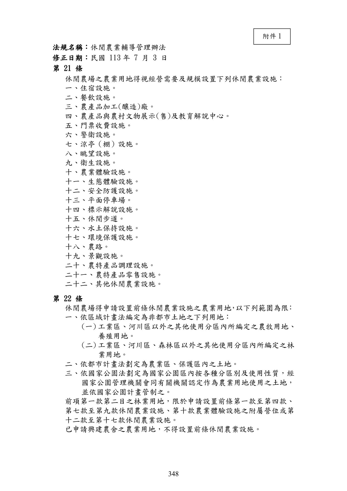
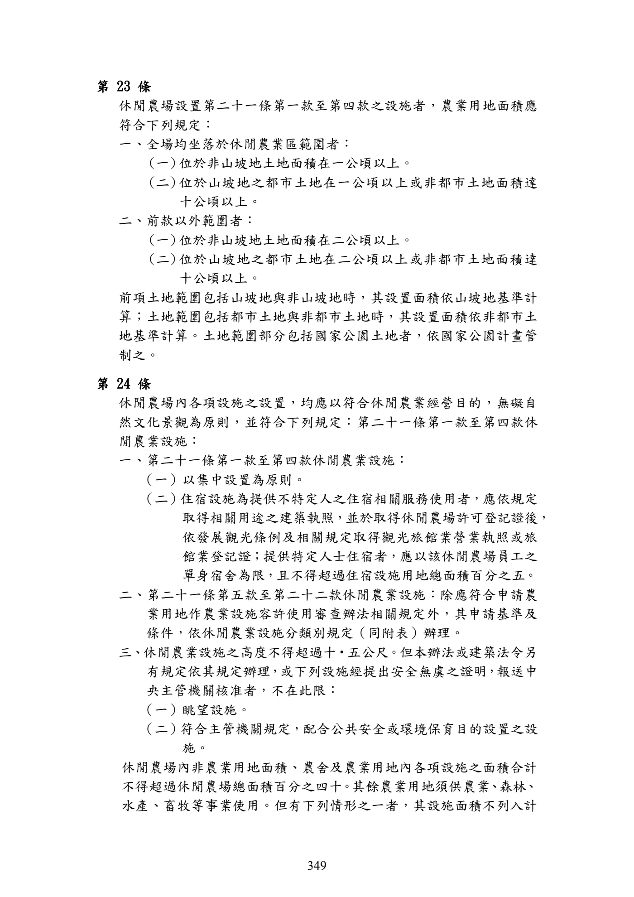
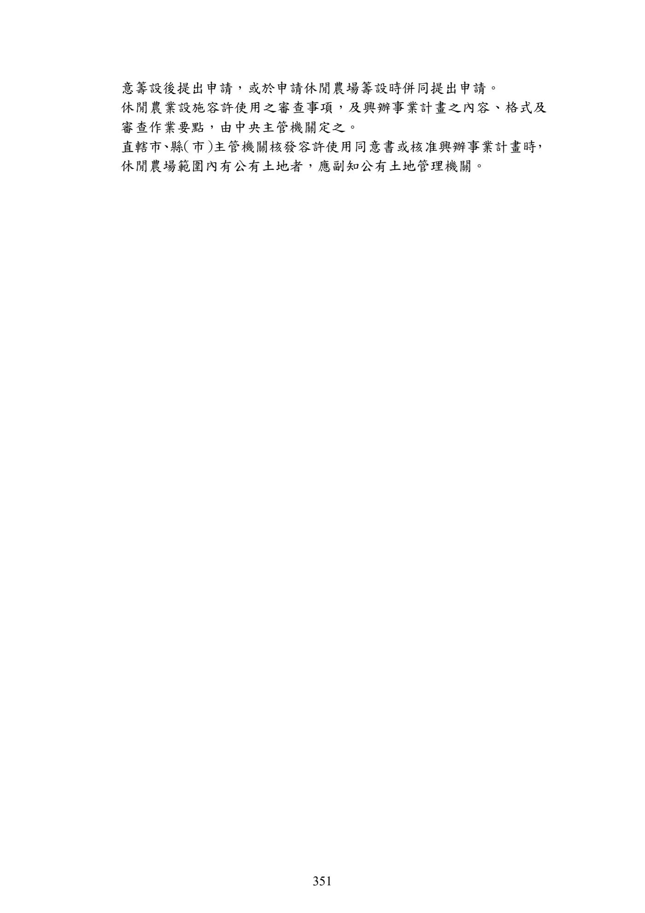
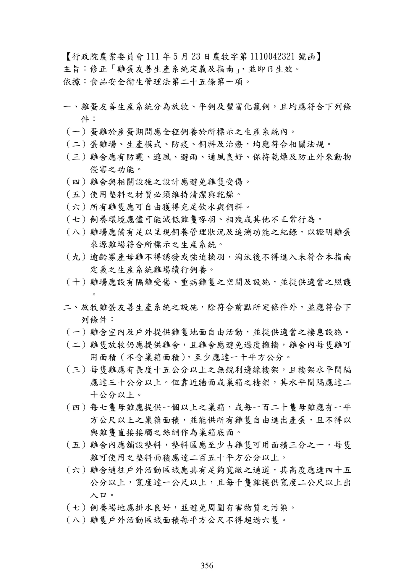

附件
手冊頁：348 PDF頁：350／359
{kind=link}

展開查看PDF原始文字層
複雜表格欄列可能因文字層順序失真，請搭配原頁預覽查閱。
法規名稱：休閒農業輔導管理辦法 修正日期：民國 113 年 7 月 3 日 第 21 條 休閒農場之農業用地得視經營需要及規模設置下列休閒農業設施： 一、住宿設施。 二、餐飲設施。 三、農產品加工(釀造)廠。 四、農產品與農村文物展示(售)及教育解說中心。 五、門票收費設施。 六、警衛設施。 七、涼亭（棚）設施。 八、眺望設施。 九、衛生設施。 十、農業體驗設施。 十一、生態體驗設施。 十二、安全防護設施。 十三、平面停車場。 十四、標示解說設施。 十五、休閒步道。 十六、水土保持設施。 十七、環境保護設施。 十八、農路。 十九、景觀設施。 二十、農特產品調理設施。 二十一、農特產品零售設施。 二十二、其他休閒農業設施。 第 22 條 休閒農場得申請設置前條休閒農業設施之農業用地 ， 以下列範圍為限 ： 一、依區域計畫法編定為非都市土地之下列用地： (一) 工業區、河川區以外之其他使用分區內所編定之農牧用地、 養殖用地。 (二) 工業區、河川區、森林區以外之其他使用分區內所編定之林 業用地。 二、依都市計畫法劃定為農業區、保護區內之土地。 三、依國家公園法劃定為國家公園區內按各種分區別及使用性質，經 國家公園管理機關會同有關機關認定作為農業用地使用之土地， 並依國家公園計畫管制之。 前項第一款第二目之林業用地，限於申請設置前條第一款至第四款、 第七款至第九款休閒農業設施、第十款農業體驗設施之附屬營位或第 十二款至第十七款休閒農業設施。 已申請興建農舍之農業用地，不得設置前條休閒農業設施。 附件 1
手冊頁：349 PDF頁：351／359
{kind=link}

展開查看PDF原始文字層
複雜表格欄列可能因文字層順序失真，請搭配原頁預覽查閱。
第 23 條 休閒農場設置第二十一條第一款至第四款之設施者，農業用地面積應 符合下列規定： 一、全場均坐落於休閒農業區範圍者： (一) 位於非山坡地土地面積在一公頃以上。 (二) 位於山坡地之都市土地在一公頃以上或非都市土地面積達 十公頃以上。 二、前款以外範圍者： (一) 位於非山坡地土地面積在二公頃以上。 (二) 位於山坡地之都市土地在二公頃以上或非都市土地面積達 十公頃以上。 前項土地範圍包括山坡地與非山坡地時，其設置面積依山坡地基準計 算；土地範圍包括都市土地與非都市土地時，其設置面積依非都市土 地基準計算。土地範圍部分包括國家公園土地者，依國家公園計畫管 制之。 第 24 條 休閒農場內各項設施之設置，均應以符合休閒農業經營目的，無礙自 然文化景觀為原則，並符合下列規定： 第二十一條第一款至第四款休 閒農業設施： 一、第二十一條第一款至第四款休閒農業設施： （一）以集中設置為原則。 （二） 住宿設施為提供不特定人之住宿相關服務使用者，應依規定 取得相關用途之建築執照，並於取得休閒農場許可登記證後 ， 依發展觀光條例及相關規定取得觀光旅館業營業執照或旅 館業登記證；提供特定人士住宿者，應以該休閒農場員工之 單身宿舍為限，且不得超過住宿設施用地總面積百分之五。 二、第二十一條第五款至第二十二款休閒農業設施：除應符合申請農 業用地作農業設施容許使用審查辦法相關規定外，其申請基準及 條件，依休閒農業設施分類別規定（同附表）辦理。 三 、 休閒農業設施之高度不得超過十 ‧ 五公尺 。 但本辦法或建築法令另 有規定依其規定辦理 ， 或下列設施經提出安全無虞之證明 ， 報送中 央主管機關核准者，不在此限： （一）眺望設施。 （二） 符合主管機關規定，配合公共安全或環境保育目的設置之設 施。 休閒農場內非農業用地面積、農舍及農業用地內各項設施之面積合計 不得超過休閒農場總面積百分之四十 。 其餘農業用地須供農業 、 森林 、 水產、畜牧等事業使用。但有下列情形之一者，其設施面積不列入計
手冊頁：350 PDF頁：352／359

展開查看PDF原始文字層
複雜表格欄列可能因文字層順序失真，請搭配原頁預覽查閱。
算： 一、依申請農業用地作農業設施容許使用審查辦法第七條第一項第三 款規定設置之設施項目。 二、依申請農業用地作農業設施容許使用審查辦法第十三條附表所列 之農糧產品加工室，其樓地板面積未逾二百平方公尺。 三、依建築物無障礙設施設計規範設置之休閒步道，其面積未逾休閒 農場總面積百分之五。 於本辦法中華民國一百零七年五月十八日修正施行前，已取得容許使 用之休閒農業設施 ， 得依原核定計畫內容繼續使用 ， 其面積異動時 ， 應 依第一項規定辦理。但異動後面積減少者，不受該項所定面積上限之 限制。 於本辦法中華民國一百一十三年七月三日修正施行前，經主管機關同 意籌設或取得許可登記證之休閒農場，場內核准之露營設施，於申請 核發許可登記證或變更經營計畫書時，應變更其設施項目為農業體驗 設施之附屬營位。 第 25 條 農業用地設置第二十一條第一款至第四款休閒農業設施，應依下列規 定辦理： 一、 位於非都市土地者 ： 應以休閒農場土地範圍擬具興辦事業計畫 ， 註明變更範圍，向直轄市、縣（市）主管機關辦理變更編定。興 辦事業計畫內辦理變更編定面積達二公頃以上者 ， 應辦理土地使 用分區變更。 二、 位於都市土地者 ：應以休閒農場土地範圍擬具興辦事業計畫 ，以 設施坐落土地之完整地號作為申請變更範圍 ， 向直轄市 、 縣 （市） 主管機關辦理核准使用。 前項應辦理變更使用或核准使用之用地，除供設置休閒農業設施面積 外，並應包含依農業主管機關同意農業用地變更使用審查作業要點規 定應留設之隔離綠帶或設施，及依其他相關法令規定應配置之設施面 積。且應依農業用地變更回饋金撥繳及分配利用辦法辦理。 前項總面積不得超過休閒農場內農業用地面積百分之十五，並以二公 頃為限；休閒農場總面積超過二百公頃者，應以五公頃為限。 第一項農業用地變更編定範圍內有公有土地者 ， 應洽管理機關同意後 ， 一併辦理編定或變更編定。 農業用地設置第二十一條第五款至第二十二款休閒農業設施，應辦理 容許使用。 第 26 條 依前條規定申請休閒農業設施容許使用或提具興辦事業計畫，得於同
手冊頁：351 PDF頁：353／359
{kind=link}

展開查看PDF原始文字層
複雜表格欄列可能因文字層順序失真，請搭配原頁預覽查閱。
意籌設後提出申請，或於申請休閒農場籌設時併同提出申請。 休閒農業設施容許使用之審查事項，及興辦事業計畫之內容、格式及 審查作業要點，由中央主管機關定之。 直轄市 、 縣 （市） 主管機關核發容許使用同意書或核准興辦事業計畫時 ， 休閒農場範圍內有公有土地者，應副知公有土地管理機關。
手冊頁：352 PDF頁：354／359

展開查看PDF原始文字層
複雜表格欄列可能因文字層順序失真，請搭配原頁預覽查閱。
法規名稱：中小企業認定標準 修正日期：民國 113 年 11 月 27 日 第一條 本標準依據中小企業發展條例（以下簡稱本條例）第二條第二項規定 訂定之。 第二條 本標準所稱中小企業，指依法辦理公司、有限合夥或商業登記，實收 資本額或出資額在新臺幣一億元以下，或經常僱用員工數未滿二百人 之事業。 第三條 本條例第四條第二項所稱小規模企業，係指中小企業中，經常僱用員 工數未滿五人之事業。 第四條 （刪除） 第五條 本標準所稱經常僱用員工數，係以勞動部勞工保險局受理事業最近十 二個月平均月投保人數為準。 第六條 具有下列情形之一者，視同中小企業： 一、中小企業經輔導擴充後，其規模超過第二條所定基準者，自擴充 之日起，二年內視同中小企業。 二、中小企業經輔導合併後，其規模超過第二條所定基準者，自合併 之日起，三年內視同中小企業。 三、輔導機關、輔導體系或相關機構辦理中小企業行業集中輔導，其 中部分企業超過第二條所定基準者，輔導機關、輔導體系或相關 機構認為有併同輔導之必要時，在集中輔導期間內，視同中小企 業。 第七條 本標準自發布日施行。 附件 2
手冊頁：353 PDF頁：355／359

展開查看PDF原始文字層
複雜表格欄列可能因文字層順序失真，請搭配原頁預覽查閱。
函令摘要：「雞蛋友善生產系統定義及指南」 【行政院農業委員會 103 年1 月23 日農牧字第 1030042072 號函】 主旨 ：檢送 「雞蛋友善生產系統定義及指南」 如附件 ， 請參考應用 ， 請查照 。 說明： 一、 為使友善生產雞蛋之標示趨於一致， 本會就豐富化籠飼、 平飼及放牧 等3種友善生產系統，根據臺灣本地環境狀況，提出經專家認可之具 體定義及內涵 ， 其中豐富化籠飼生產系統之定義為雞隻可在籠內自由 活動，平均每隻雞所分配面積應超過750平方公分；平飼生產系統為 雞隻可於床面或地面上自由活動，平均每隻雞所分配面積應超過800 平方公分；放牧生產系統為雞隻可於室內及戶外活動， 平均每隻雞所 分配面積應超過800平方公分。其餘尚包含雞籠高度、棲架長度、棲 架間隔及巢箱密度等條件。 二、 為因應國際畜牧友善飼養新興議題的發展 ， 旨揭指南可供各界應用於 各類雞蛋製品之標示及驗證 ， 並逐步建構民眾培養友善畜牧之概念 ， 及提供有意投入雞蛋友善生產系統之業者規劃時之參考依據 ， 以於生 產過程兼顧動物福利及實務需求。 附件 3
手冊頁：354 PDF頁：356／359

展開查看PDF原始文字層
複雜表格欄列可能因文字層順序失真，請搭配原頁預覽查閱。
雞蛋友善生產系統定義及指南 一、前言 說明 蛋雞飼養模式符合前言所列基準，始足以稱為本指南之雞蛋生產系 統。 基 準 1 蛋雞於整個產蛋期間都必須飼養於所標示之生產系統內。 2 蛋雞場、生產模式、防疫、飼料、治療等，均須符合相關法規。 3 雞舍為維持雞隻良好生活環境，應有防曬、遮風、避雨等功能，且 應通風良好保持乾燥，並防止野獸侵害。 4 雞舍與相關設施之設計應避免雞隻受傷。 5 使用墊料等材質必須維持清潔與乾燥。 6 每隻雞隻都能夠自由獲得充足飲水與飼料。 7 飼養環境須能儘量減低雞隻啄羽及相殘等不正常行為。 8 雞場須備有得以呈現飼養管理狀況及追溯功能之紀錄，以證明雞蛋 來源雞場符合所標示之生產系統。 9 逾齡寡產母雞淘汰後，不得進入非本指南定義之生產系統雞場續行 飼養。 二、豐富化籠飼 定義 雞隻可在籠內自由活動 ， 且提供雞隻滿足行為所需設施之生產系統 。 基 準 1 飼養密度每隻雞之所需面積應超過 750 cm ²，且單一籠之總面積不 得小於2,000 cm²。 2 雞籠高度最低為35cm，且60%區域之高度為40cm 以上。 3 雞籠內應設置巢箱供雞隻使用。 4 每隻雞應有長度15cm 以上之棲架。 5 籠內須提供磨爪設施 ， 以及可誘發雞隻扒地覓食自然行為之設施 （例 如塑膠草墊）。
手冊頁：355 PDF頁：357／359

展開查看PDF原始文字層
複雜表格欄列可能因文字層順序失真，請搭配原頁預覽查閱。
三、平飼 定義 在雞舍內部或戶外能提供雞隻在床面或地面上自由活動之生產系 統。 基 準 1 室內飼養密度每隻雞之所需面積應超過800 cm²（約12 隻/m²）。 2 巢箱或產蛋區必須充足，並能供所有雞隻自由進出產蛋。每7 隻母 雞提供 1 個以上之巢箱，或每 120 隻母雞應有 1 m ²以上之巢箱面 積。 3 每隻雞應有長度15cm 以上之棲架，棲架水平間隔30cm 以上。 四、放牧 定義 在雞舍室內及戶外提供雞隻地面自由活動之生產系統。 基 準 1 應提供適當之棲息設施。 2 雞隻放牧仍應提供雞舍，雞舍內面積避免過度擁擠，飼養密度每隻 雞之所需面積應超過800 cm² （約12 隻/m²） 。 每隻雞應有長度15cm 以上之棲架 ， 棲架水平間隔30cm 以上 。 放牧區若設置無牆開放式遮 蔽設施，可視為室內面積計算。 3 巢箱或產蛋區必須充足，並能供所有雞隻自由進出產蛋。每7 隻母 雞提供1 個以上巢箱，或每120 隻母雞應有1 m²以上之巢箱面積。 4 雞隻戶外活動區域面積應每平方公尺不得超過6 隻。 5 雞舍通往戶外活動區域應該具有足夠寬敞的通道，至少得以讓一隻 以上的雞隻自由進出（高45cm 以上，寬1m 以上）。 6 飼養場地應排水良好，並避免周圍有害物質之污染。 7 戶外活動區應提供可以保護及逃避掠食者及惡劣氣候的遮蔽或遮 陰，例如：遮棚、樹、灌木、茅草等。 8 遮蔽或遮蔭設置應方便雞隻使用 。(1.遮蔽設施是指結構堅固可供雞 隻使用，並可保護雞隻不會受到惡劣氣候傷害之安全設施。2.遮蔽 設施可視為飼養面積，但不可重覆計算。)
手冊頁：356 PDF頁：358／359
{kind=link}

展開查看PDF原始文字層
複雜表格欄列可能因文字層順序失真，請搭配原頁預覽查閱。
【行政院農業委員會 111 年5 月23 日農牧字第 1110042321 號函】
主旨：修正「雞蛋友善生產系統定義及指南」 ，並即日生效。
依據：食品安全衛生管理法第二十五條第一項。
一、雞蛋友善生產系統分為放牧、平飼及豐富化籠飼，且均應符合下列條
件：
（一）蛋雞於產蛋期間應全程飼養於所標示之生產系統內。
（二）蛋雞場、生產模式、防疫、飼料及治療，均應符合相關法規。
（三）雞舍應有防曬、遮風、避雨、通風良好、保持乾燥及防止外來動物
侵害之功能。
（四）雞舍與相關設施之設計應避免雞隻受傷。
（五）使用墊料之材質必須維持清潔與乾燥。
（六）所有雞隻應可自由獲得充足飲水與飼料。
（七）飼養環境應儘可能減低雞隻啄羽、相殘或其他不正常行為。
（八）雞場應備有足以呈現飼養管理狀況及追溯功能之紀錄，以證明雞蛋
來源雞場符合所標示之生產系統。
（九）逾齡寡產母雞不得誘發或強迫換羽，淘汰後不得進入未符合本指南
定義之生產系統雞場續行飼養。
（十）雞場應設有隔離受傷、重病雞隻之空間及設施，並提供適當之照護
。
二、放牧雞蛋友善生產系統之設施，除符合前點所定條件外，並應符合下
列條件：
（一）雞舍室內及戶外提供雞隻地面自由活動，並提供適當之棲息設施。
（二）雞隻放牧仍應提供雞舍，且雞舍應避免過度擁擠，雞舍內每隻雞可
用面積（不含巢箱面積） ，至少應達一千平方公分。
（三）每隻雞應有長度十五公分以上之無銳利邊緣棲架，且棲架水平間隔
應達三十公分以上。但靠近牆面或巢箱之棲架，其水平間隔應達二
十公分以上。
（四）每七隻母雞應提供一個以上之巢箱，或每一百二十隻母雞應有一平
方公尺以上之巢箱面積，並能供所有雞隻自由進出產蛋，且不得以
與雞隻直接接觸之絲網作為巢箱底面。
（五）雞舍內應舖設墊料，墊料區應至少占雞隻可用面積三分之一，每隻
雞可使用之墊料面積應達二百五十平方公分以上。
（六）雞舍通往戶外活動區域應具有足夠寬敞之通道，其高度應達四十五
公分以上，寬度達一公尺以上，且每千隻雞提供寬度二公尺以上出
入口。
（七）飼養場地應排水良好，並避免周圍有害物質之污染。
（八）雞隻戶外活動區域面積每平方公尺不得超過六隻。手冊頁：357 PDF頁：359／359

展開查看PDF原始文字層
複雜表格欄列可能因文字層順序失真，請搭配原頁預覽查閱。
（九）戶外活動區域應提供遮棚、樹、灌木、茅草與其他可以保護、供逃
避掠食者及惡劣氣候之遮蔽或遮蔭設施。每百隻雞應有八千平方公
分之遮蔽或遮蔭設施。
（十）前款遮蔽或遮蔭設施，應方便雞隻使用；且遮蔽設施之結構應堅固
，並可保護雞隻不會受到惡劣氣候傷害。
三、平飼雞蛋友善生產系統之設施，除符合第一點所定條件外，並應符合
下列條件：
（一）雞舍內每隻雞可用面積（不含巢箱面積）至少應達一千平方公分（
約每平方公尺十隻雞隻） 。
（二）每隻雞應有長度達十五公分以上之無銳利邊緣棲架，且棲架水平間
隔應達三十公分以上。但靠近牆面或巢箱之棲架，其水平間隔應達
二十公分以上。
（三）每七隻母雞應提供一個以上之巢箱，或每一百二十隻母雞應有一平
方公尺以上之巢箱面積，並能供所有雞隻自由進出產蛋，且不得以
與雞隻直接接觸之絲網作為巢箱底面。
（四）雞舍內應舖設墊料，墊料區應至少占雞隻可用面積三分之一，每隻
雞可使用之墊料面積應達二百五十平方公分以上。
四、豐富化籠飼雞蛋友善生產系統之設施，除符合第一點所定條件外，並
應符合下列條件：
（一）籠內每隻雞活動面積應達七百五十平方公分以上，且每隻雞可用面
積（不含巢箱面積）應達六百平方公分以上，單一籠之總面積應達
二千平方公分以上。
（二）雞籠內最低高度應達四十五公分以上。
（三）每隻雞應有長度十五公分以上之無銳利邊緣棲架。
（四）雞籠內應設置巢箱供雞隻使用，且不得以與雞隻直接接觸之絲網作
為巢箱底面。
（五）籠內應提供磨爪設施及可誘發雞隻扒地覓食自然行為之設施。
（六）雞隻應可自由採食及飲水，線性飼料槽應提供每隻雞至少十二公分
之採食空間，每隻雞應至少可使用二個乳頭飲水器。